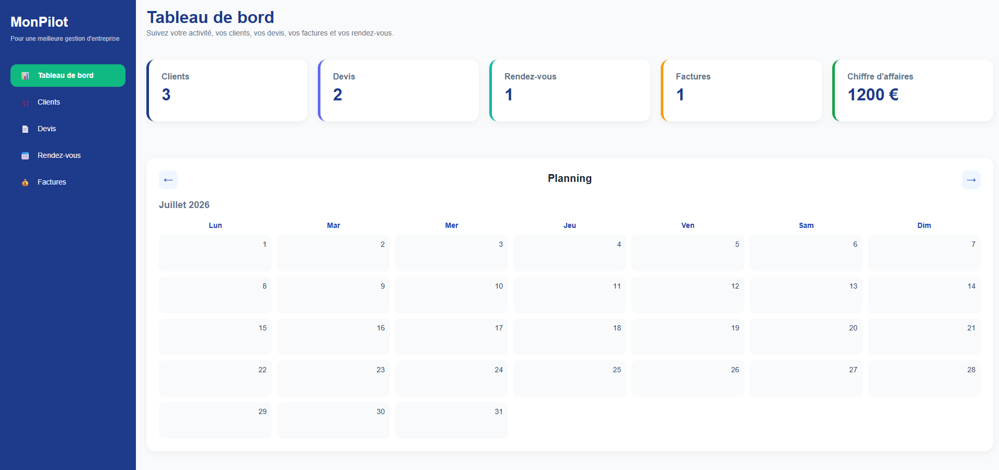
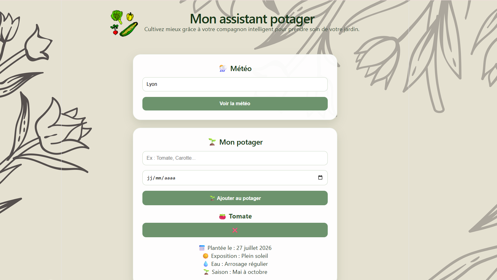
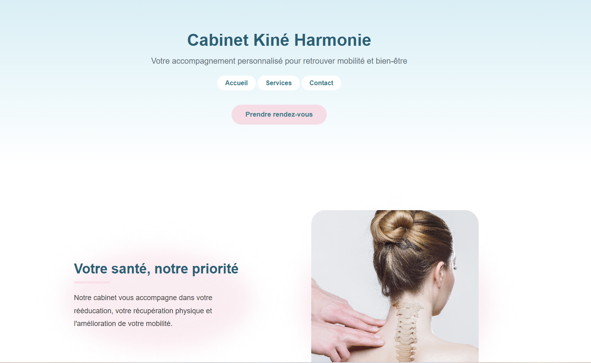
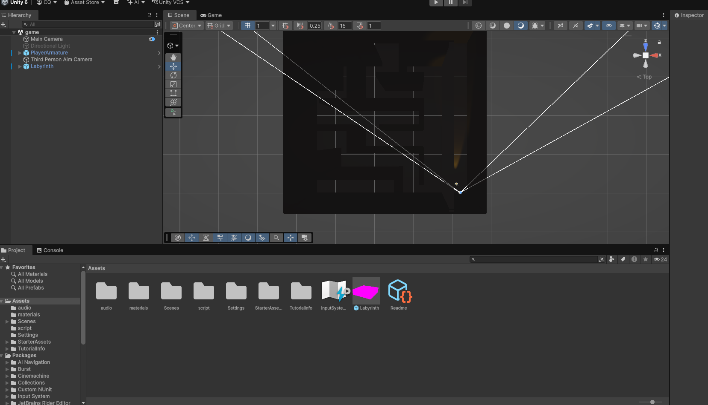

MonPilot
React · JavaScript · React Router
Application web de gestion destinée aux indépendants et petites entreprises pour centraliser les clients, devis, rendez-vous et factures.
Découvrir le projet →CHARLOTTE QUEIJO - FUTURE DÉVELOPPEUSE WEB ET WEB MOBILE
Je développe des applications web pour apprendre, expérimenter et progresser. Mon objectif est de rejoindre une alternance afin de continuer à monter en compétences au sein d'une équipe de développement.
Développement web · Créatrice de projets numériques · Curieuse et autodidacte
Après plusieurs années dans le domaine administratif, j’ai choisi de me reconvertir vers le développement web, un domaine qui m’attire par son équilibre entre logique, créativité et résolution de problèmes. Je me forme aujourd’hui aux métiers du développement web avec une approche basée sur la pratique : comprendre un besoin, concevoir une solution, développer, tester et améliorer. À travers mes projets personnels, je développe mes compétences en HTML, CSS, JavaScript et React. J’ai notamment réalisé une application d’assistance au potager intégrant une API météo, un site vitrine complet pour un cabinet de kinésithérapie et une application de gestion destinée aux indépendants et petites entreprises. Chaque projet me permet d’explorer de nouvelles technologies, de mieux comprendre les besoins utilisateurs et d’améliorer ma façon de concevoir des applications. Curieuse, rigoureuse et persévérante, j’aime comprendre les outils que j’utilise et progresser étape par étape. Je recherche aujourd’hui une alternance en développement web afin de continuer à apprendre aux côtés d’une équipe et contribuer à des projets concrets.

Application web de gestion destinée aux indépendants et petites entreprises pour centraliser les clients, devis, rendez-vous et factures.
Découvrir le projet →
Application web permettant d'accompagner les jardiniers grâce à une API météo et des conseils personnalisés selon les cultures.
Découvrir le projet →
Site vitrine responsive intégrant un widget Calendly afin de faciliter la prise de rendez-vous des patients.
Découvrir le projet →
Prototype réalisé avec Unity afin d'expérimenter la logique de jeu, les interactions utilisateur et la programmation en C#.
Découvrir le projet →